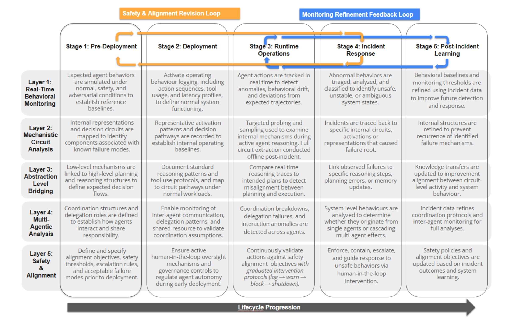

Accountable Deployment of Agentic AI Demands Layered, System-Level Interpretability
Links will be enabled once the paper/arXiv/code are public.
Interpretability for agentic AI must become system-centric: explain trajectories, responsibility assignment, and lifecycle dynamics—not only model internals.
Agentic AI systems extend LLMs with planning, tool use, memory, and multi-step control loops. ATLIS proposes interpretability that explains system behavior over time—not just token-level mechanisms.
Abstract
Agentic AI systems extend large language models with planning, tool use, memory, and multi-step control loops, shifting deployment from a single predictive model to a behavior-producing system. We argue interpretability has not made this accompanying shift: prevailing methods remain model-centric, explaining isolated outputs rather than diagnosing long-horizon plans, tool-mediated actions, and multi-agent coordination. This gap limits auditability and accountability because failures emerge from interactions among planning, memory updates, delegation, and environmental feedback. We advance the position that interpretability for agentic AI must be system-centric, focusing on trajectories, responsibility assignment, and lifecycle dynamics, not only internal model mechanisms. To operationalize this view, we propose the Agentic Trajectory and Layered Interpretability Stack (ATLIS), spanning real-time behavioral monitoring, mechanistic analysis, abstraction bridging, multi-agent coordination analysis, and safety and alignment oversight.
Core claims
Figures
Click a figure to open the PDF in a new tab.

assets/ATLIS-framework_page-0001.jpg. Check filename + capitalization.

assets/Illustrative%20Example%20Diagram_page-0001.jpg. Check spaces + capitalization.
Use Case: Palliative Care Referral
🔴 The Concrete Failure
Consider a hospital deploying an agentic system for palliative care referral across two disease sites: lung and gastrointestinal (GI) cancer. Despite identical referral criteria and subagent components, the lung site begins referring patients later than GI for matched risk profiles.
In one system, short-term symptom improvement stored in memory delays escalation; in the other, accumulated hospitalizations trigger earlier referral. The divergence emerges only over time, due to differences in how longitudinal evidence is stored and propagated through monitoring and planning.
Why model-centric methods fail: Feature attribution (SHAP, Integrated Gradients) explains individual predictions, but the divergence arises from longitudinal interactions between monitoring, memory, planning, and referral timing.
🟢 How ATLIS Surfaces the Divergence
ATLIS surfaces this drift before it causes harm. Layer 1 flags a systematic delay in lung referrals relative to GI for comparable patients. It then traces the root cause through Layers 2–4 using inter-agent coordination signals and mechanistic differences.
Layer 3 maps differences in symptom vs. hospitalization weighting to divergent clinical reasoning pathways, while Layer 5 evaluates whether referral timing remains within prescribed safety bounds and escalates borderline cases for human-in-the-loop clinician review.
Because ATLIS is embedded across the deployment lifecycle, findings feed back into updated simulations (pre-deployment), refined runtime baselines (operations), and recalibrated orchestration policies (post-incident learning).
Call to Action
🔬 Research Priorities
System-level attribution
- Trace plans, memory reads/writes, tool calls, and delegation across time.
- Assign responsibility within multi-component systems.
Scalable runtime interpretability
- Continuous lightweight monitoring.
- Risk-aware escalation to deeper analysis when anomalies occur.
Benchmarks & infrastructure
- Trajectory datasets + logging schemas.
- Multi-agent evaluation protocols.
🌐 Broader Implications
For Practitioners
- Adopt layered monitoring from day one—not as an afterthought.
- Design agent architectures with interpretability hooks at each component.
- Establish incident response workflows that leverage trajectory logs.
For Regulators
- Require system-level audit trails, not just model cards.
- Define accountability standards for multi-agent deployments.
- Mandate human-in-the-loop escalation for high-stakes decisions.
For Organizations
- Invest in interpretability infrastructure alongside capability development.
- Build cross-functional teams spanning ML, systems, and domain expertise.
- Treat post-incident learning as a continuous improvement process.